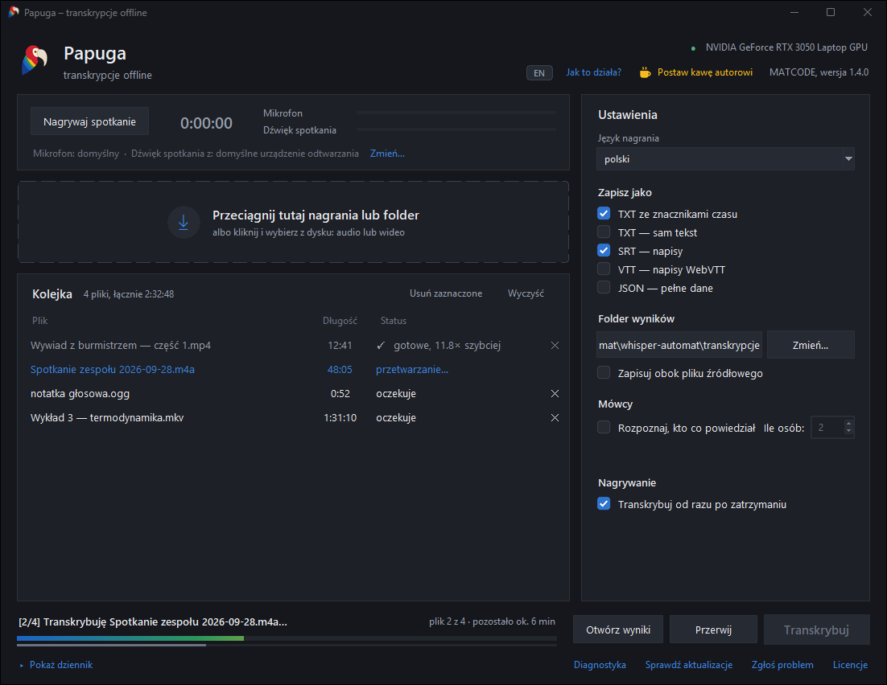

Zamienia nagrania w tekst. Na Twoim komputerze.
Papuga rozpoznaje mowę i podpisuje, kto co powiedział. Niczego nie wysyła do chmury: po jednorazowym pobraniu modelu pracuje całkiem bez internetu.
Wersja 1.2.0 · Windows 10 i 11, 64-bit · za darmo, licencja MIT
- AnnaDobrze, zaczynamy. Marek, jak wygląda harmonogram?
- MarekPrototyp mamy na czwartek, testy w piątek rano.
- AnnaCzyli demo dla zarządu w poniedziałek jest realne?
- MarekRealne, jeśli Kasia zdąży z tłumaczeniem interfejsu.
- KasiaZdążę. Potrzebuję tylko ostatecznej listy ekranów.
- ✓ Gotowe, 11,8× szybciej, niż trwało nagranie
Trzy kroki
Bez konta, bez konfiguracji i bez uczenia się programu.
-
Przeciągnij nagrania
Audio albo wideo, pojedyncze pliki albo cały folder. MP4, MKV, MOV, MP3, WAV, M4A i kilkanaście innych formatów.
-
Wybierz postać tekstu
Tekst ze znacznikami czasu, czysty tekst, napisy SRT lub VTT do filmu, JSON z pełnymi danymi.
-
Kliknij Transkrybuj
Gotowe pliki trafiają do folderu wyników. Przy kilku nagraniach możesz odejść od komputera, program pokazuje, ile zostało.
Co potrafi
- Rozpoznaje, kto mówi
- Dzieli rozmowę na osoby. Po nagraniu odsłuchasz próbkę każdego głosu i wpiszesz imię, które trafi do tekstu i napisów.
- Polski i dziesięć innych języków
- Angielski, niemiecki, ukraiński, czeski, słowacki, francuski, hiszpański, włoski, rosyjski albo wykrywanie automatyczne.
- Lepiej pisze nazwiska i skróty
- Wpisz je w pole Kontekst, a model będzie ich używał, zamiast zgadywać ze słuchu.
- Sam dobiera model do komputera
- Z kartą NVIDIA liczy kilkanaście razy szybciej, niż trwa nagranie. Bez karty pracuje na procesorze: wolniej, ale równie dokładnie.
- Kolejka
- Wrzucasz kilka nagrań naraz, usuwasz z kolejki w trakcie pracy, widzisz pozostały czas.
- Aktualizuje się sam
- Raz na dobę sprawdza, czy jest nowa wersja, i instaluje wyłącznie wydania podpisane kluczem autora.
Tak wygląda praca
Kolejka po lewej, ustawienia po prawej, postęp na dole. Pasek w barwach piór pokazuje bieżący plik.

Prywatność
Nagrania ze spotkań, wywiadów i rozmów to często rzeczy, których nie powinno się wysyłać na cudze serwery. Papuga ich nie wysyła.
- Wszystko liczy się lokalnie
- Rozpoznawanie mowy i głosów działa na Twoim procesorze lub karcie graficznej. Nagrania i teksty nie opuszczają komputera.
- Dwa połączenia, oba jawne
- Raz, przy pierwszym uruchomieniu, pobiera model z huggingface.co. Raz na dobę pyta github.com o nową wersję, bez logowania i bez identyfikatorów.
- Otwarty kod
- Kod programu jest publiczny na licencji MIT. Każdy może sprawdzić, co program robi, i zbudować go samodzielnie.
- Podpisane wydania
- Aktualizację zainstaluje tylko wtedy, gdy wydanie podpisano kluczem autora wbudowanym w program. Samo konto na GitHubie do tego nie wystarczy.
Zanim pobierzesz
| System | Windows 10 lub 11, 64-bit |
|---|---|
| Pamięć | 8 GB RAM |
| Miejsce na dysku | ok. 4 GB: program 1,1 GB i model 1,6 GB pobierany przy pierwszym uruchomieniu |
| Karta graficzna | NVIDIA ze sterownikiem od wersji 527 przyspiesza pracę kilkanaście razy. Nie jest wymagana. |
Windows ostrzeże przy pierwszej instalacji („System Windows ochronił ten komputer”), bo instalator nie ma płatnego certyfikatu wydawcy. Kliknij Więcej informacji, potem Uruchom mimo to. Instalacja nie wymaga uprawnień administratora i o nic nie pyta.
Problem albo pomysł? Napisz na GitHubie.